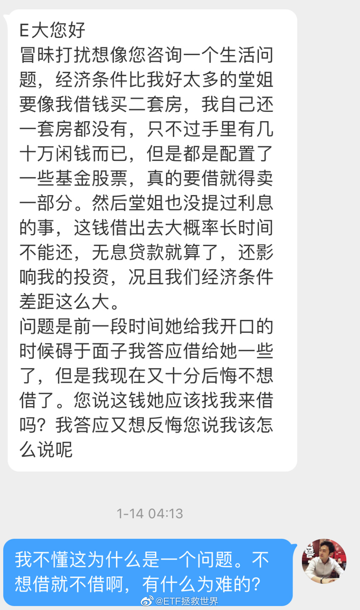

欧洲真的连一个疫苗都弄不出来吗，不会吧。那么多大医药公司呢@新浪财经:【#美国辉瑞将减少对欧洲新冠疫苗供应# 欧洲多国表示不满】据报道，挪威公共卫生研究所15日表示，美国辉瑞公司将减少对整个欧洲的疫苗供应。美国辉瑞公司当天表示，尽管将暂时影响出货量，但长期来看可增加新冠疫苗产能。 对此欧洲多国致信欧盟委员会称，无法接受这种情况，各国疫苗接种计划的可信度将受到威胁。央视网快看的微博视频 美国辉瑞将减少对欧洲新冠疫苗供应 多国表示不满 154万次播放 02:09
改变人生小贴士：你有没有特别想做但一直没有做的事情。如果有，就现在，right now，今は，지금，Jetzt，тепер……立即去做。但是不用做很多，就做一点点。多么一点点都无所谓。比如你想练琴，拿出来，弹一下也可以。然后每天弹一下。当然，大概率你会多弹几下。但无所谓，想停就停。但每天保底就一下。你想写东西，每天就写10个字。你想学编程，每天就学半页。你想锻炼，每天就练一个仰卧起坐。然后，不用谢我。
回复@冰激凌8052:这些很重要，但不是最重要。最重要是借钱后你自己的感受。如果帮助过你，你借给他你会很开心，因为是一个回报。显然问题并不是这样//@冰激凌8052:她帮助过你没有？平时待你如何？你们关系亲近吗？这些我觉得是要考虑一下的。@ETF拯救世界:我是不是太冷血了。总之我觉得就是，如果我有余力，这种锦上添花的事情我就帮帮你。如果我自己也很难，那就坦然拒绝，没什么过意不去的。为了面子自己难受这种事，我做不出来。 
 央视网快看的微博视频
央视网快看的微博视频  美国辉瑞将减少对欧洲新冠疫苗供应 多国表示不满
美国辉瑞将减少对欧洲新冠疫苗供应 多国表示不满